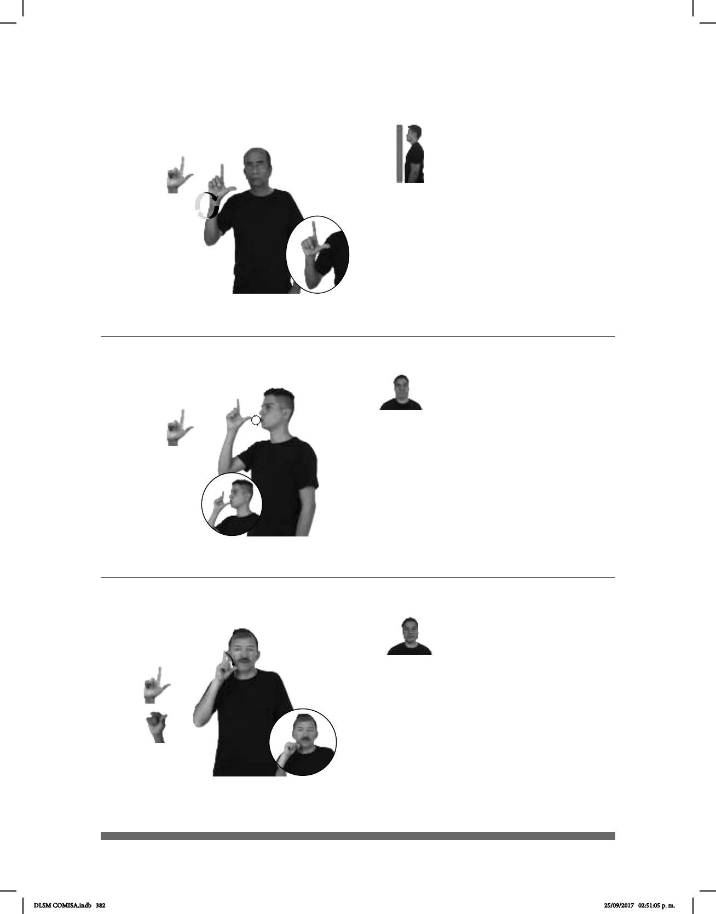

382
Seña: SM
L.1
Palma hacia afuera.
A altura del pecho.
La mano se mueve
formando círculos hacia la derecha.
sust. m. Primer día
de la semana que sigue al domin-
go y precede al martes dedicado
por la mayoría de las personas al
inicio del trabajo semanal. Para los
cristianos segundo día de la semana
como se observa en el calendario
gregoriano.
Seña: SM
L.1
Palma hacia la izquierda.
Sobre el labio inferior.
La mano simula varios
saltos.
Labios abiertos y
redondeados.
sust. f. Forma de energía,
como la del Sol, el fuego o la electricidad,
que permite ver los objetos sobre los que
vista; estado de la atmósfera cuando es de
día o cuando hay luna en la noche.
Seña: SM
Seña que pasa de
L.1 a L.15
Palma hacia la
izquierda.
Sobre la mejilla.
El dedo índice se
retrae.
adv. En el día siguiente
al de hoy.
(L-124)
(L-125)
(L-126) Mañana (A)
TODOS-LUNES pro-YO TRABAJAR
Yo trabajo todos los lunes.
pro-TÚ POR FAVOR LUZ APAGAR
Apaga la luz, por favor.
CUIDAR MUCHO MAÑANA VERNOS
Cuídate mucho, nos vemos mañana.
DLSM COMISA.indb 382 25/09/2017 02:51:05 p. m.